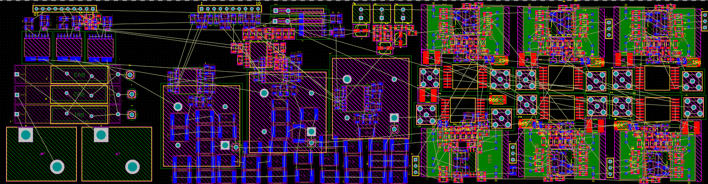

Isolated three-phase matrix converter rectifier for AI-server power
Senior Capstone · Texas A&M Power Electronics Lab (Dr. Enjeti)
In progress: PCB layout phase
I'm designing the PCB for a three-phase AC-to-DC rectifier built as a matrix converter. Six bidirectional GaN switches connect the three input phases directly to the output, with no bulky DC-link stage in between. The target application is power delivery for AI servers, where efficiency and power density matter most.

GaN switches turn on and off far faster than silicon, so the layout itself becomes part of the circuit. I've learned to treat gate loops, Kelvin-source connections and signal routing as design decisions, not afterthoughts, because stray inductance and noise directly affect how cleanly the switches operate.
This board puts three-phase power and low-voltage control signals side by side. I've learned how to keep the two domains apart with isolated gate drivers, isolated supplies and a split power plane, and how that separation shapes where every component and trace can go.
To shrink the board, I place components tightly on both sides while leaving enough room to actually route between them. It's a constant trade-off between board area and routability, and it's changed how I plan a layout before placing the first part.